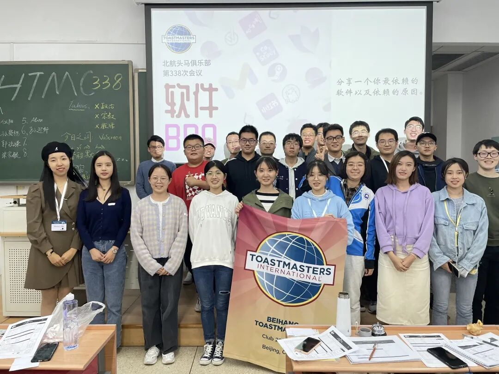
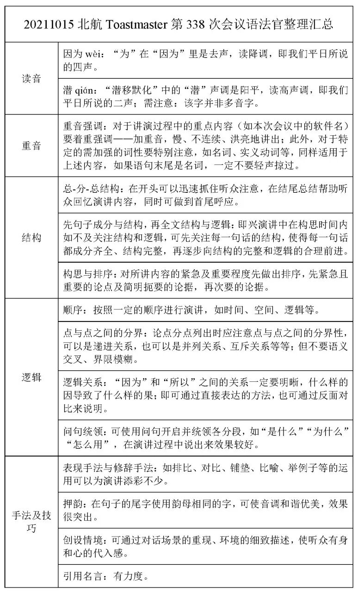
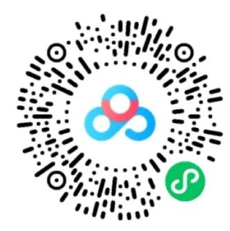

北航头马第338次会议《软件Bro》总结

各位同学大家好，我们第338次头马会议总结来啦！这次会议我们有很多新朋友参加，并且担任了不同的角色，大家的表现都超级棒！时间官李沐润很认真的给出了各位同学的时间明细；语法官任永坤给出了各位同学的语法上的问题，并对大家讲述上的结构进行的分析，会后更是将总结进行了整理发到了群里，做的很认真，值得大家学习；哼哈官孙楚杨和糖果官徐贝林也都表现的很不错，完全看不出是第一次担任角色。
但是这次会议的问题也很明显，大家对于时间的观念比较差，超时较为严重，大家在看到时间官的红色牌子后应当在30s内结束演讲，这也是对自己公众演讲能力的一种锻炼。希望下次会议我们能做的更好。
下面附上语法官会后认真总结的报告和会议视频链接，通过复盘和反思才能够有所提高哦～


文案｜Zachary
编辑｜Howard